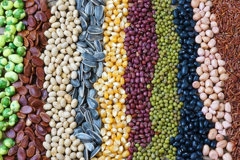

High yielding seeds can be provided by the government at low prices. The research and development activities needed to produce such productive seeds are also undertaken by the government, the expenditure on these is a sort of subsidy granted to the farmers.
